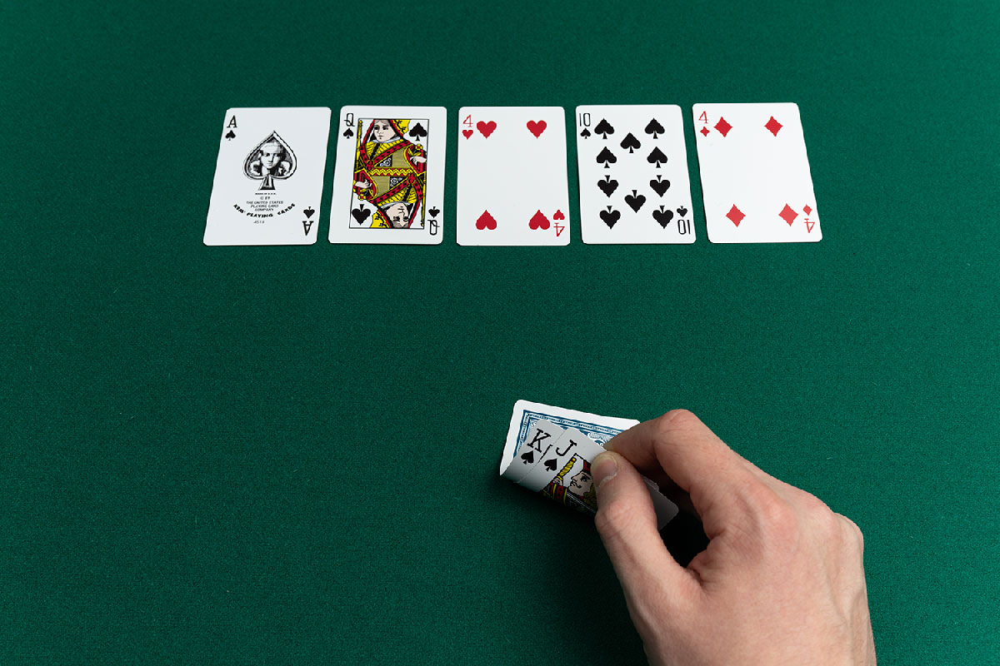

Texas Hold 'em has become an iconic variant of the classic gambling card game. Texas Hold 'em contains a unique blend
of luck, skill, and psychology, as the players have crucial decisions to make on when and how much to bet, when to fold,
and how to calculate odds of landing a certain hand. These competitive aspects make it a favorite in house games and
in casinos.
This variation has become the most popular version of poker in the United States, and I'd like to explore its origins,
as well as how the game has evolved in the ways in which it's played and portrayed. Texas Hold 'em started out as a
relatively small game in the early 1900s, and more recently in the 2000s the game of Texas Hold 'em gained more popularity
due to its TV coverage and main event in the World Series of Poker.
